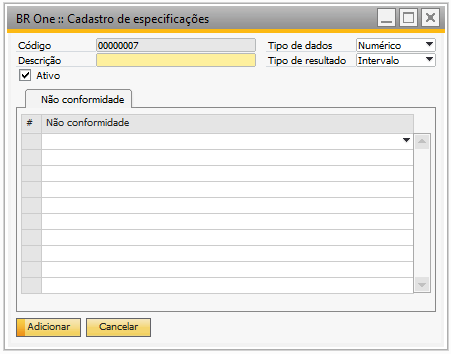
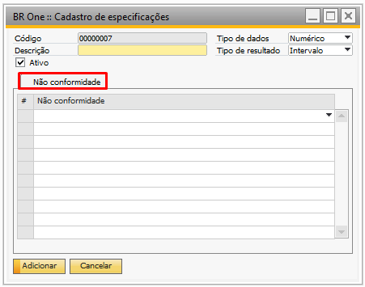
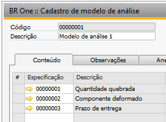

Especificações
Para acessar o cadastro de Especificações de análise é necessário ir no menu:
Administração -> Definição -> Qualidade -> Especificações
Na tela “BR One :: Cadastro de especificações”, serão cadastradas as especificações, não conformidades, e em situações específicas, os parâmetros possíveis para o resultado das análises.
O campo “Código” será gerado automaticamente pelo add-on, iniciando em 1.
O campo “Tipo de dados” define a forma como a especificação será tratada (Numérico, Texto, Data, Sim/Não).
O campo “Tipo de resultado” complementa a forma como a especificação será tratada. Valida se o tipo de resultado é um valor fixo ou de intervalo (caso o tipo de dados for Sim/Não, o tipo de resultado deverá ser obrigatoriamente fixo).
O campo “Ativo” se estiver marcado, permite que a especificação seja utilizada nos modelos de Ficha de análise. Não pode ser desativada uma especificação que pertença a algum modelo.
Não conformidade
Na aba “Não conformidade”, é possível selecionar as não conformidades cadastradas na tela “BR One :: Cadastro de não conformidades”.
Os dados cadastrados nesta tela serão usado na tela “BR One :: Cadastro de modelo de análise”.
Caso não seja informado valor no campo “Descrição”, será exibida a seguinte mensagem de erro:
BR One :: O campo [Descrição] deve ser preenchido.
Caso não seja informada nenhuma não conformidade, será exibida a seguinte mensagem de erro:
BR One :: Deve ser selecionado ao menos uma não conformidade.
Caso o Tipo de resultado informado seja “Intervalo”, não serão permitidos os tipos de dados “Texto” ou “Sim/Não”. Caso esta regra seja violada, será exibida a seguinte mensagem de erro:
BR One :: O tipo de resultado não pode ser “intervalo” quando o tipo de dado for “texto” ou “sim/não”.
Se a especificação já estiver sendo usada em algum modelo de análise, não será permitida a modificação de alguns campos. Caso tente modificar o valor de algum campo, será exibida a seguinte mensagem de erro:
BR One :: Esta especificação já está vinculada em algum modelo de análise.
Se a especificação já estiver sendo usada em algum modelo de análise, não será permitida a remoção do registro. Caso tente remover o registro, será exibida a seguinte mensagem de erro:
BR One :: Esta especificação já está vinculada em algum modelo de análise.
Se a especificação já estiver sendo usada em algum modelo de análise, não será permitida a alteração do campo “Tipo de resultado”. Caso tente modificar o valor do campo, será exibida a seguinte mensagem de erro:
BR One :: O tipo de resultado não pode ser modificado quando a especificação já possui um vínculo a um modelo de análise.